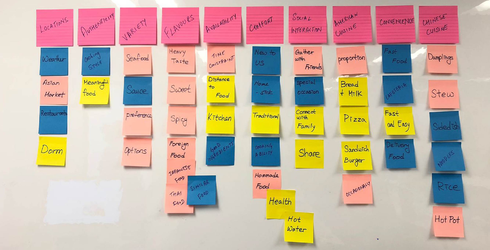
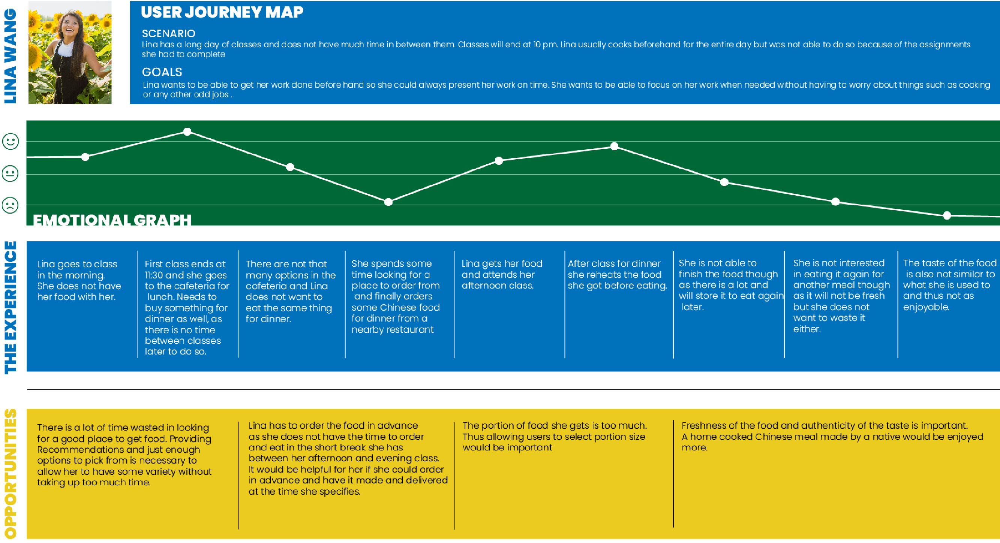
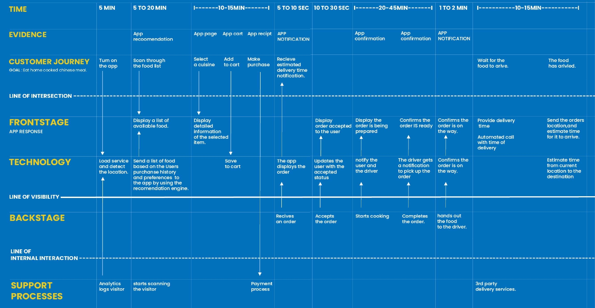
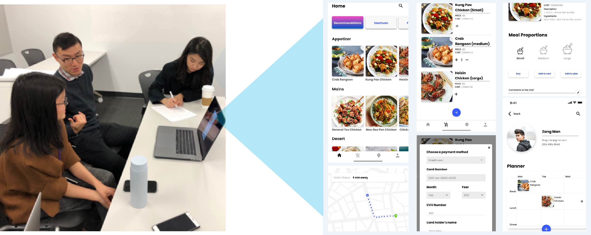

Chinese Home-cooked Food Delivery Service
Design Research, Group Project with Om Patil and Yuna Lee
One of the major difficulties faced by Chinese students living away from
home is
getting comfortable in a new environment. A busy schedule and a lack of familiar surroundings
can
make them feel cut off from their culture and one way in which they try to reconnect is through
food.
OUR QUESTION: How could we design a food delivery app that provides
home-cooked
meals for Chinese students living away from home?
Tools: Illustrator, Google Survey
Secondary and Primary Research
Research was conducted on the general and eating habits of Chinese people. We also got information on their interest and ideas about the food delivery service we were creating. Card sorting helped organise all of our main takeaways
Through secondary and primary research we identified areas that required attention and possible areas for improvements. These have been showcased through the journey map.
User - Service Blueprint
Wireframing for Initial Prototype
Explorations for layout and UI were done and an initial prototype was created to use for further research.

Survey And Focus Group
Surveys helped understand what was important to the Chinese students. The main
impressions derived from the survey:
1. Price Matters
2. Preference for variety
3. Many have a “Eat to survive” attitude
Following the surveys a focus group was conducted with a basic prototype that we created. This helped us refine the prototype to better suit the students needs.
Final Prototype
Students liked that the food could be filtered based on region. It was nice and
fun to look for the familiar name of their hometown.Rather than having just comments to the
chef we added sliders to intimate the
flavour you were expecting, to the chef. This was added to make it apparent that
personalization was welcome and to give an idea to the users about the kinds of
requests they could make to the chef.
Chinese people generally expect rice as a side to any main dish that they order. This
unique way in which they eat their cuisine needed to be accomodated into the cart page flow.
Since this is an app catering to Chinese people in particular, they expected familiar features
like access to popular modes of payment available in China.
Future Improvements
One major aspect that we would like to include in future work would facilitation of social gatherings through the app. Being very community driven Chinese students would welcome such a feature.